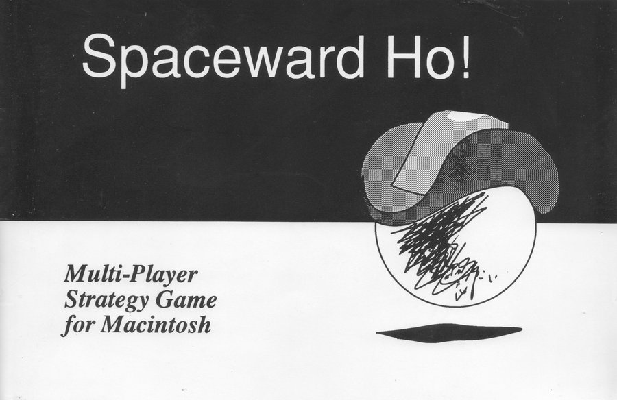

Spaceward Ho! 1.0 Manual (Macintosh)

Spaceward Ho!
Multi-Player Strategy Game for Macintosh
by Peter Commons and Joe Williams
Copyright © 1990, Delta Tao Software, Inc.
This copy: Jake Wilson’s, bought from PC Games Vault (pcgamesvault.com) and scanned by him.
- Foreword (p. 2)
- About Delta Tao (p. 2)
- About the Packaging (p. 3)
- About Spaceward Ho! (p. 4)
- About Peter Commons (p. 5)
- A Quick Summary of a Typical Game (p. 5)
- Playing the Game
- Starting a New Game (p. 6)
- The Windows (p. 6)
- The Economy (p. 19)
- Building Ships (p. 20)
- Moving Ships (p. 20)
- Organizing Fleets (p. 22)
- Exploring Planets: Temperature & Gravity (p. 22)
- Colonizing Planets (p. 24)
- Strip Mining Planets (p. 25)
- Killing Enemy Planets (p. 26)
- Advancing Technology (p. 26)
- Reference
- Designing your own Ships (p. 28)
- Reviewing Battles (p. 30)
- Playing with Multiple Players (p. 31)
- Setting Up a New Galaxy (p. 33)
- The Computer Players (p. 35)
- Comparing Players (p. 36)
- Zooming In and Out (p. 36)
- The Options Menu (p. 38)
- Technical Support (p. 40)
- Recommended Reading (p. 41)
- Delta Tao’s Favorite Games (p. 42)
- Glossary (p. 42)
- About This Manual (p. 44)